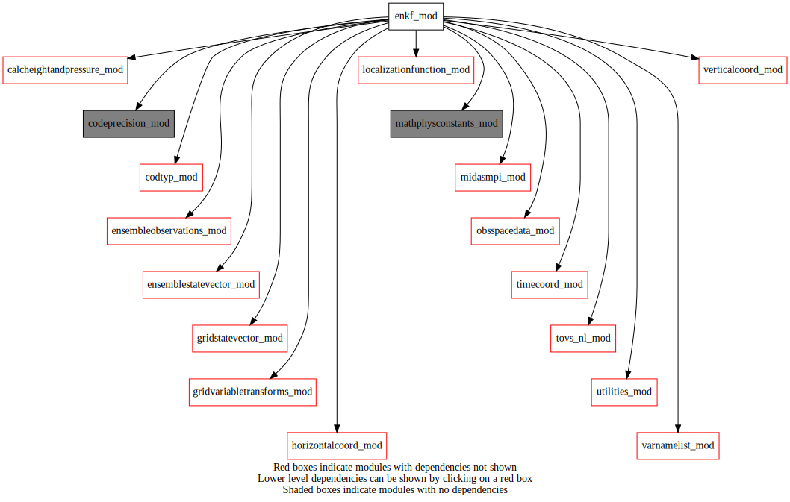
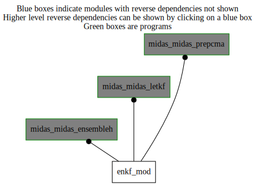

Dependency Diagrams:
 Direct Dependency Diagram¶
 Reverse Dependency Diagram¶
Description
MODULE enkf_mod (prefix=’enkf’ category=’1. High-level functionality’)
- Purpose
Various routines that are useful for implementing an EnKF in MIDAS, including the LETKF.
Quick access
- Types
- Routines
enkf_computevertlocation(),enkf_getmodulatedstate(),enkf_interpweights(),enkf_latlonalreadyfound(),enkf_letkfanalyses(),enkf_letkfgetmpiglobaltags(),enkf_letkfsetupmpidistribution(),enkf_modifyamsubobserror(),enkf_rejecthighlatir(),enkf_setupinterpinfo(),enkf_setupmodulationfactor(),getmodulationfactor()Needed modules
mpi(mpi_statuses_ignore())
midasmpi_mod: MODULE midasMpi_mod (prefix=’mmpi’ category=’8. Low-level utilities and constants’)
utilities_mod: MODULE utilities_mod (prefix=’utl’ category=’8. Low-level utilities and constants’)
mathphysconstants_mod: MODULE MathPhysConstants_mod (prefix=’mpc’ category=’8. Low-level utilities and constants’)
timecoord_mod: MODULE timeCoord (prefix=’tim’ category=’7. Low-level data objects’)
verticalcoord_mod: MODULE verticalcoord (prefix=’vco’ category=’7. Low-level data objects’)
horizontalcoord_mod: MODULE HorizontalCoord_mod (prefix=’hco’ category=’7. Low-level data objects’)
ensemblestatevector_mod: MODULE ensembleStateVector_mod (prefix=’ens’ category=’6. High-level data objects’)
gridstatevector_mod: MODULE gridStateVector_mod (prefix=’gsv’ category=’6. High-level data objects’)
obsspacedata_mod: MODULE obsSpaceData_mod (prefix=’obs’ category=’6. High-level data objects’)
tovs_nl_mod: MODULE tovs_nl (prefix=’tvs’ category=’5. Observation operators’)
ensembleobservations_mod: MODULE ensembleObservations (prefix=’eob’ category=’6. High-level data objects’)
gridvariabletransforms_mod: MODULE gridVariableTransforms (prefix=’gvt’ category=’4. Data Object transformations’)
localizationfunction_mod: MODULE localizationFunction_mod (prefix=’lfn’ category=’2. B and R matrices’)
varnamelist_mod: MODULE varNameList (prefix=’vnl’ category=’7. Low-level data objects’)
codeprecision_mod: MODULE codePrecision_mod (prefix=’pre’ category=’8. Low-level utilities and constants’)
codtyp_mod: MODULE codtyp_mod (prefix=’codtyp’ category=’8. Low-level utilities and constants’)
calcheightandpressure_mod: MODULE czp_calcHeightAndPressure (prefix=’czp’ category=’4. Data Object transformations’)Types
- type enkf_mod/struct_enkfinterpinfo¶
- Type fields
% interpweights (*,*,*) [real ,allocatable]
% latindexes (*,*,*) [integer ,allocatable]
% latlonstep [integer ]
% lonindexes (*,*,*) [integer ,allocatable]
% mylatbeghalo [integer ]
% mylatendhalo [integer ]
% mylonbeghalo [integer ]
% mylonendhalo [integer ]
% numindexes (*,*) [integer ,allocatable]
Variables
Subroutines and functions
- subroutine enkf_mod/enkf_letkfanalyses(algorithm, numsubens, randomshufflesubens, ensembleanl, ensembletrl, ensobs_mpiglobal, ensobsgain_mpiglobal, statevectormeananl, winterpinfo, maxnumlocalobs, hlocalize, hlocalizepressure, vlocalize, mpidistribution, numretainedeigen, edaobsimpact)¶
- Purpose
Local subroutine containing the code for computing the LETKF analyses for all ensemble members, ensemble mean.
- Arguments
algorithm [character ]
numsubens [integer ]
randomshufflesubens [logical ]
ensembleanl [struct_ens ]
ensembletrl [struct_ens ,pointer]
ensobs_mpiglobal [struct_eob ,target]
ensobsgain_mpiglobal [struct_eob ]
statevectormeananl [struct_gsv ]
winterpinfo [struct_enkfinterpinfo ]
maxnumlocalobs [integer ]
hlocalize (*) [real ]
hlocalizepressure (*) [real ]
vlocalize [real ]
mpidistribution [character ]
numretainedeigen [integer ]
edaobsimpact [logical ]
- Called from
- Call to
utl_tmg_start(),enkf_letkfsetupmpidistribution(),ens_getnummembers(),ens_getnumlev(),ens_gethco(),ens_getvco(),gsv_allocate(),tim_getdatestamp(),gsv_zero(),ens_computemean(),ens_copyensmean(),utl_abort(),utl_randomorderint(),lfn_setup(),enkf_computevertlocation(),utl_tmg_stop(),enkf_letkfgetmpiglobaltags(),eob_getlocalbodyindices(),lfn_response(),utl_matinverse(),utl_eigendecomp(),enkf_interpweights(),vnl_varlevelfromvarname(),gsv_getvarnamefromk(),vnl_varkindfromvarname(),gsv_getlevfromk(),ens_getonelev_r4(),getmodulationfactor(),gsv_deallocate()
- subroutine enkf_mod/enkf_computevertlocation(vertlocation_r4, statevectormeantrl)¶
- Purpose
Compute extract global 3D vertical location field from supplied stateVector. Can be either logPressure or depth levels.
- Arguments
vertlocation_r4 (*,*,*) [real ,inout,allocatable]
statevectormeantrl [struct_gsv ,inout]
- Called from
- Call to
gsv_getnumlev(),utl_abort(),gsv_allocate(),tim_getdatestamp(),gsv_zero(),gsv_copy(),gsv_transposetilestostep(),gsv_deallocate()
- subroutine enkf_mod/enkf_letkfsetupmpidistribution(mynumlatlonrecv, mynumlatlonsend, mylatindexesrecv, mylonindexesrecv, mylatindexessend, mylonindexessend, myprocindexesrecv, myprocindexessend, mynumprocindexessend, mpidistribution, winterpinfo)¶
- Purpose
Setup for distribution of grid points over mpi tasks.
- Arguments
mynumlatlonrecv [integer ]
mynumlatlonsend [integer ]
mylatindexesrecv (*) [integer ,allocatable]
mylonindexesrecv (*) [integer ,allocatable]
mylatindexessend (*) [integer ,allocatable]
mylonindexessend (*) [integer ,allocatable]
myprocindexesrecv (*) [integer ,allocatable]
myprocindexessend (*,*) [integer ,allocatable]
mynumprocindexessend (*) [integer ,allocatable]
mpidistribution [character ]
winterpinfo [struct_enkfinterpinfo ]
- Called from
- Call to
- subroutine enkf_mod/enkf_letkfgetmpiglobaltags(latlontagmpiglobal, mylatindexesrecv, mylonindexesrecv)¶
- Arguments
latlontagmpiglobal (*,*) [integer ]
mylatindexesrecv (*) [integer ]
mylonindexesrecv (*) [integer ]
- Called from
- function enkf_mod/enkf_latlonalreadyfound(alllatindexesrecv, alllonindexesrecv, latlonindex, procindex)¶
- Arguments
alllatindexesrecv (*,*) [integer ]
alllonindexesrecv (*,*) [integer ]
latlonindex [integer ]
procindex [integer ]
- Return
found [logical ]
- Called from
- subroutine enkf_mod/enkf_setupinterpinfo(winterpinfo, hco, weightlatlonstep, mylonbeg, mylonend, mylatbeg, mylatend)¶
- Purpose
Setup the weights and lat/lon indices needed to bilinearly interpolate the LETKF weights from a coarse grid to the full resolution grid. The coarseness of the grid is specified by the weightLatLonStep argument.
- Arguments
winterpinfo [struct_enkfinterpinfo ]
hco [struct_hco ]
weightlatlonstep [integer ]
mylonbeg [integer ]
mylonend [integer ]
mylatbeg [integer ]
mylatend [integer ]
- Called from
- subroutine enkf_mod/enkf_interpweights(winterpinfo, weights)¶
- Purpose
Perform the bilinear interpolation of the weights using the precalculated interpolation info.
- Arguments
winterpinfo [struct_enkfinterpinfo ]
weights (,,-(winterpinfo%mylonbeghalo)+1,-(winterpinfo%mylatbeghalo)+1) [real ]
- Called from
- subroutine enkf_mod/enkf_modifyamsubobserror(obsspacedata)¶
- Arguments
obsspacedata [struct_obs ,target]
- Called from
- Call to
obs_numheader(),obs_headelem_r(),obs_headelem_i(),codtyp_get_codtyp()
- subroutine enkf_mod/enkf_rejecthighlatir(obsspacedata)¶
- Arguments
obsspacedata [struct_obs ,target]
- Called from
- Call to
obs_numheader(),obs_headelem_r(),obs_headelem_i(),tvs_isidburphyperspectral(),obs_bodyset_i(),obs_bodyelem_i()
- subroutine enkf_mod/enkf_getmodulatedstate(statevector_in, statevectormeantrl, vlocalizelengthscale, numretainedeigen, nens, eigenvectorcolumnindex, statevector_out, besilent)¶
- Purpose
Compute vertical localization matrix, and the corresponding eigenvectors/eigenvalues, to obtain modulated stateVector.
- Arguments
statevector_in [struct_gsv ,in]
statevectormeantrl [struct_gsv ,in]
vlocalizelengthscale [real ,in]
numretainedeigen [integer ,in]
nens [integer ,in]
eigenvectorcolumnindex [integer ,in]
statevector_out [struct_gsv ,inout]
besilent [logical ,in]
- Called from
- Call to
utl_tmg_start(),utl_abort(),gsv_copy(),gsv_add(),gsv_varexist(),getmodulationfactor(),utl_tmg_stop()
- subroutine enkf_mod/enkf_setupmodulationfactor(vco, numretainedeigen, nens, vlocalizelengthscale, besilent)¶
- Purpose
setup modulationFactorArray by calling getModulationFactor for first time.
- Arguments
vco [struct_vco ,in,pointer]
numretainedeigen [integer ,in]
nens [integer ,in]
vlocalizelengthscale [real ,in]
besilent [logical ,in]
- Called from
- Call to
- subroutine enkf_mod/getmodulationfactor(vco, eigenvectorlevelindex, eigenvectorcolumnindex, numretainedeigen, nens, vlocalizelengthscale, modulationfactor_r4[, besilent_opt])¶
- Purpose
compute modulation factor needed to multiply ensemble perturbation to get the modulated perturbation: (Nens*nLambda/(Nens - 1))^1/2 * Lambda^1/2
- Arguments
vco [struct_vco ,in,pointer]
eigenvectorlevelindex [integer ,in]
eigenvectorcolumnindex [integer ,in]
numretainedeigen [integer ,in]
nens [integer ,in]
vlocalizelengthscale [real ,in]
modulationfactor_r4 [real ,out]
- Options
besilent_opt [logical ,in,]
- Called from
enkf_letkfanalyses(),enkf_getmodulatedstate(),enkf_setupmodulationfactor()- Call to
{kind=link}
{kind=link}